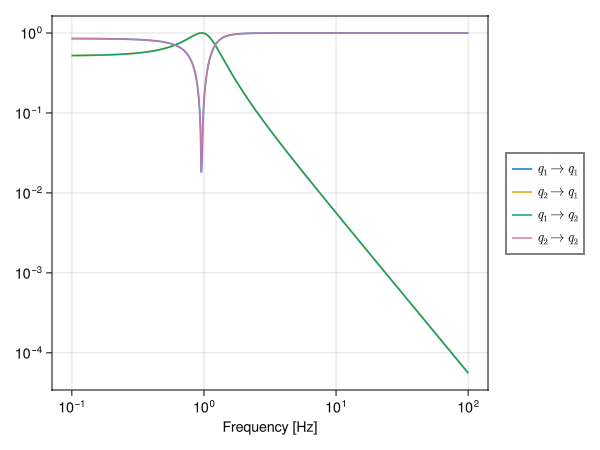

using SecondQuantizedAlgebra
using SLHQuantumSystems
using Symbolics
using GLMakie
using PhysicalConstants.CODATA2018: SpeedOfLightInVacuum as c
using ControlSystemsSymbolic construction
hilb = FockSpace(:cav)
a = Destroy(hilb, :a)
@variables ω κ
cav = SLH("cav", [1], [κ * a], ω * a' * a)
cavSS = QuantumStateSpace(cav)
quadcavSS = toquadrature(cavSS)QuantumStateSpace{ControlSystemsBase.Continuous, QuadratureBasis}
A =
-0.4999999999999999(κ^2) 0.9999999999999998ω
-0.9999999999999998ω -0.4999999999999999(κ^2)
B =
-0.9999999999999998κ 0.0
0.0 -0.9999999999999998κ
C =
0.9999999999999998κ 0.0
0.0 0.9999999999999998κ
D =
0.9999999999999998 0.0
0.0 0.9999999999999998
Continuous-time state-space modelCalculation of coupling rate
T = 0.00001
L = 400; #metersThe round-trip travel time of the cavity is 2L/c. T is the probability of photon leaving the cavity after one round-trip, thus the amplitude coupling rate is
κ_num = T * c.val / (4 * L)1.8737028625000003Numeric substitution
paramdict = Dict([ω => 1 * 2π, κ => κ_num])
numcav = substitute(quadcavSS, paramdict)
numeric = toquadrature(numcav)QuantumStateSpace{ControlSystemsBase.Continuous, QuadratureBasis}
A =
-1.755381208470347 6.2831853071795845
-6.2831853071795845 -1.755381208470347
B =
-1.8737028624999998 0.0 + 0.0im
0.0 + 0.0im -1.8737028624999998
C =
1.8737028624999998 0.0 + 0.0im
0.0 + 0.0im 1.8737028624999998
D =
0.9999999999999998 + 0.0im 0.0 + 0.0im
0.0 + 0.0im 0.9999999999999998 + 0.0im
Continuous-time state-space modelFrequency grid
freq_hz = collect(logrange(0.1, 100, 500))
freq = 2π .* freq_hz;Outputs
G = freqresp(numeric, freq) #this is a ControlSystems call2×2×500 Array{ComplexF64, 3}:
[:, :, 1] =
0.851512-0.0445472im -0.521726+0.0272943im
0.521726-0.0272943im 0.851512-0.0445472im
[:, :, 2] =
0.851407-0.0451744im -0.521822+0.0276871im
0.521822-0.0276871im 0.851407-0.0451744im
[:, :, 3] =
0.851299-0.0458107im -0.521921+0.028086im
0.521921-0.028086im 0.851299-0.0458107im
;;; …
[:, :, 498] =
0.999983+0.00574497im 5.90615e-5+3.39313e-7im
-5.90615e-5-3.39313e-7im 0.999983+0.00574497im
[:, :, 499] =
0.999984+0.00566598im 5.74486e-5+3.25508e-7im
-5.74486e-5-3.25508e-7im 0.999984+0.00566598im
[:, :, 500] =
0.999984+0.00558807im 5.58798e-5+3.12265e-7im
-5.58798e-5-3.12265e-7im 0.999984+0.00558807imPlotting
fig = Figure()
ax_tf = Axis(
fig[1, 1];
xscale = log10, yscale = log10,
xlabel = "Frequency [Hz]"
)
for ii in 1:2
for jj in 1:2
lines!(ax_tf, freq_hz, abs.(G[ii, jj, :]), label = L"q_{%$jj} \rightarrow q_{%$ii}")
end
end
fig[1, 2] = Legend(fig, ax_tf)
fig
This page was generated using Literate.jl.